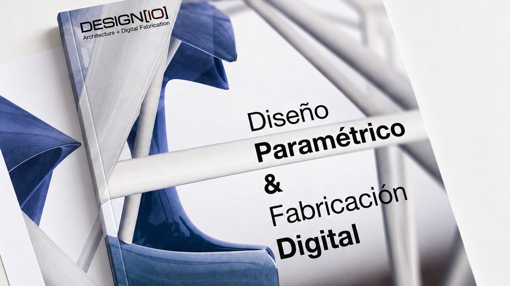
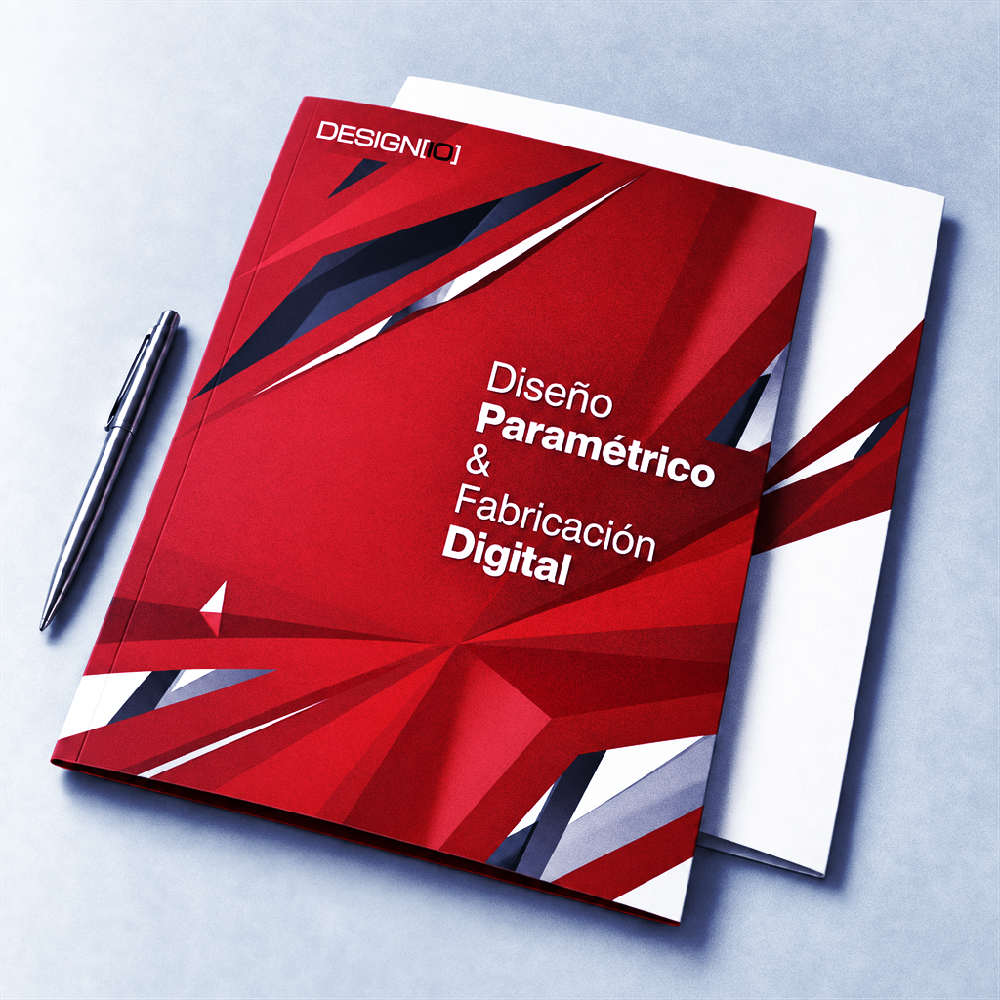
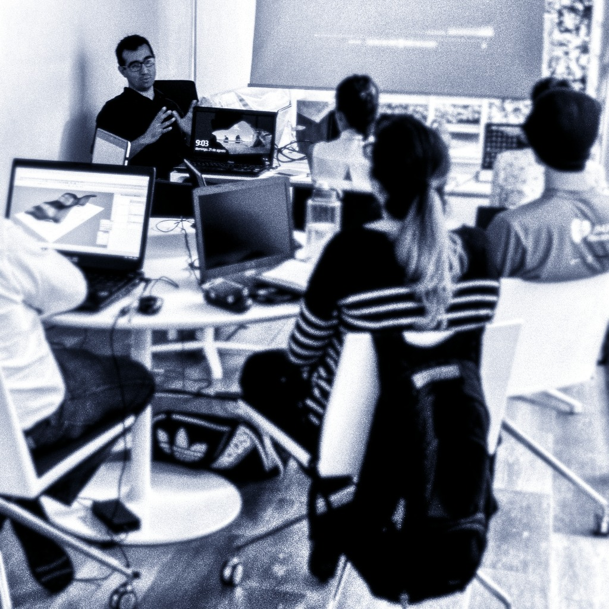
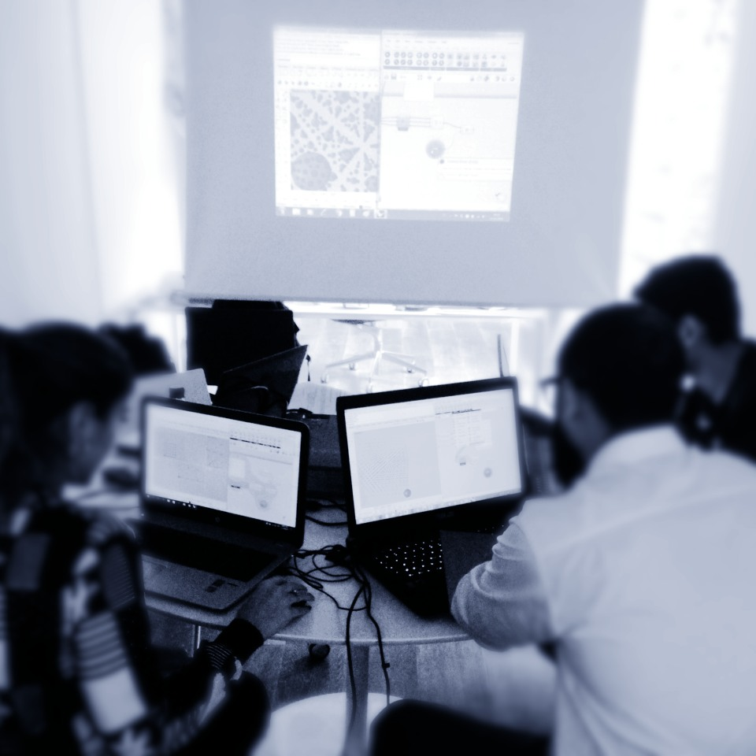
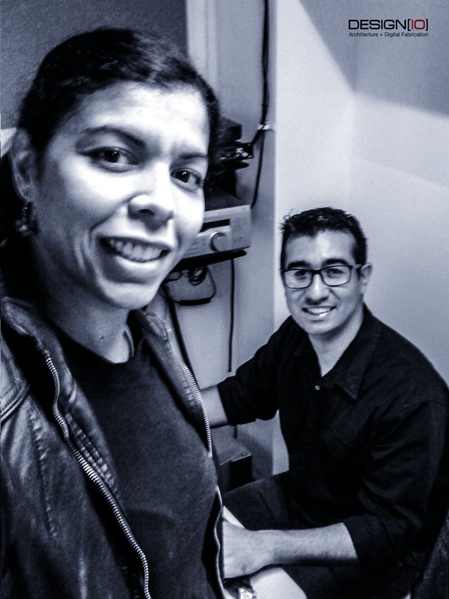

DESIGNING THE LEARNING EXPERIENCE
Turning technical knowledge into a coherent learning experience.
2012–2018. Caracas & Madrid

THE CHALLENGE
How could advanced digital tools become approachable without reducing their complexity?
The program brought together parametric design, 3D modeling, visualization and digital fabrication for participants with different backgrounds. The challenge was to make these tools understandable, experimental and relevant to their own design practice.
THE SHIFT
Beyond teaching tools: crafting an evolving learning experience.
My partner and I co-designed the learning program and its progression. He led the technical teaching as an authorized Rhino trainer, while I shaped the program identity, communications, participant journey and workshop production.
MY CONTRIBUTION
Program co-design
Editorial direction
Visual communication
Participant experience
Marketing
Logistics
Workshop production
A CONSIDERED JOURNEY
01
Discover
Break through
02
Prepare
Set up
03
Participate
Immerse
04
Continue
Expand
05
Iterate
Improve
FROM SYSTEM TO EXPERIENCE

Program identity

Workshop setting

Hands-on learning
WHAT EVOLVED?

Each edition informed the next.
What began as a series of technical workshops gradually became a more coherent learning
system— refining how the program was communicated, prepared, experienced and carried forward.